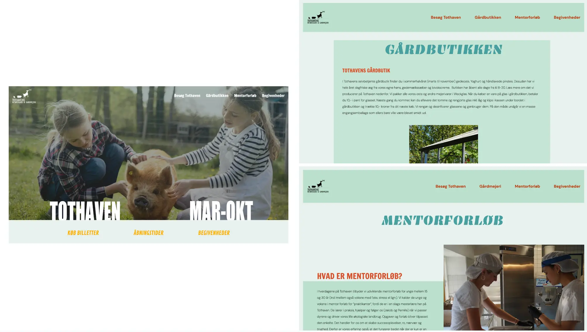

DIGITAL PORTFOLIO
Grundlæggende Indhold
I forløbet, Grundlæggende Indhold, lavede vi to gruppeopaver. Første opgave var et videosite, hvor vi skulle interviewe en person med en passion. Anden opgave var et case arbejde, hvor vi skulle redesigne et allerede eksisterende site for en valgfri virksomhed.
Passionssite
Vi begyndte dette tema med en opgave, hvor vi lærte om videoproduktion, herunder præproduktion, optagelse og postproduktion. Vi skulle lære at filme og optage ekstern lyd, som til sidst skulle redigeres i Adobe Premiere Pro og Audition.
Virksomhedssite
Virksomhedssitet var vores første introduktion til case-arbejde og et større gruppeprojekt. I dette projekt skulle vi selv udvælge og kontakte en virksomhed for at lave et redesign af deres hjemmeside. Min gruppe og jeg valgte at kontakte Tothaven, og vi begyndte derfor at researche, hvordan vi ville redesigne deres eksisterende site. Vi brugte især vores interview med ejeren af Tothaven, Jakob, til at finde ud af, hvordan vi bedst kunne formidle indholdet i vores redesign.
Vi har forsøgt at redesigne sitet, for at gøre det mere brugervenligt og æstetisk. Med udgangspunkt i målgruppen familier, børn og bedsteforældre, var det vigtigt for os, at sitet skulle være overskueligt og nemt at navigere i. Den havde før et forældet udtryk med mange småfejl. Vi har forsøgt at gøre sitet mere visuelt, da Tothaven sælger godt på deres idylliske stemning. Ud fra reserach og interview med Jakob lavede vi et styletile med valg af farver og fonte.
